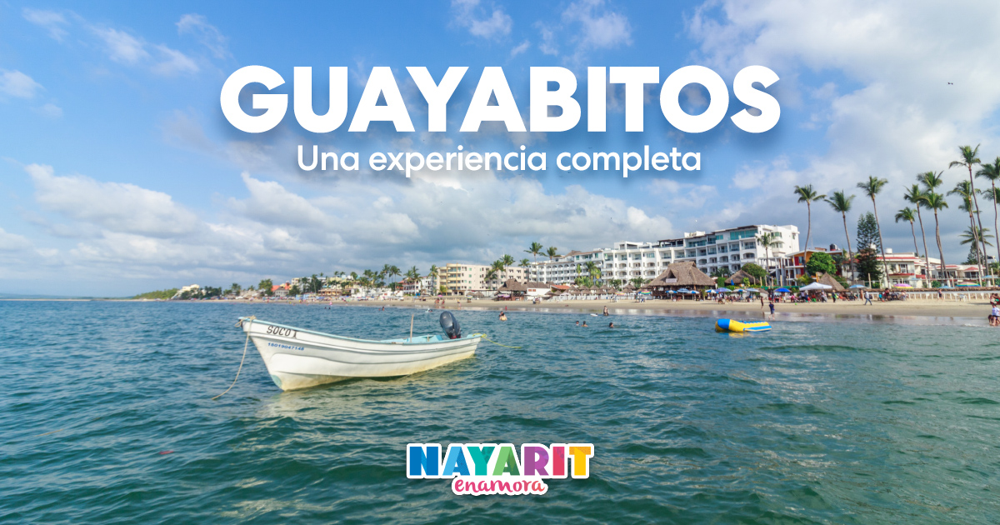

MotoTour Mexico
MotoTour Mexico
Somos una empresa mexicana dedicada a la aventura y nuevas experiencia, con nuestros servicios de tours usted podra descubrir el territorio mexicano de una nueva y unica manera
Ruta Turistica: GUAYABITOS - MAZATLAN

Destinos
- Zacatecas, Zacatecas
- Zapotlanejo, Jalisco
- Rincon de Guayabitos, Nayarit
- Mazatlan, Sinaloa
- Parras, Coahuila
Durante este viaje de 8 dias podras disfrutas de pueblos magicos mexicanos y de dos hermosas playas, No te pierdas la oportunidad de tener esta experiencia unica
Ruta Turistica: MAZATLAN Directo

Destinos
- Parras, Coahuila
- Mazatlan, Sinaloa
- Isla de la Piedra, Sinaloa
- Cuatrocienegas, Coahuila
Pasa con nosotros 6 dias con nosotros en este tour donde visitamos 2 pueblos magicos, Parras y Cuatrocienegas, una famosa por su vino y el otro por sus hermosos manantiales.
Tambien visitamos Mazatlan, una ciudad hermosa donde disfrutar sus playas y actividad nocturna